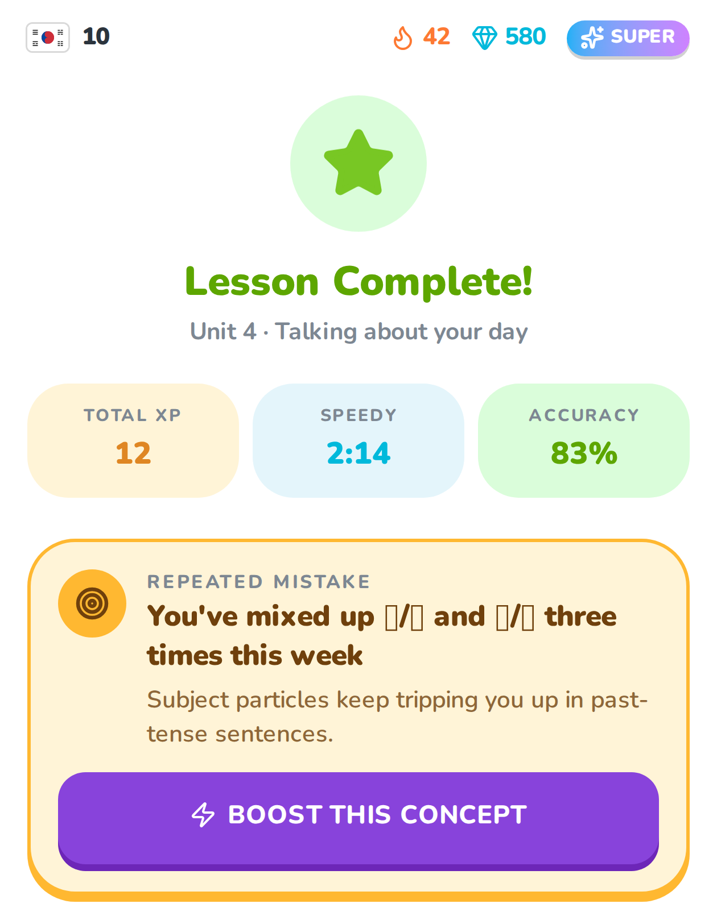
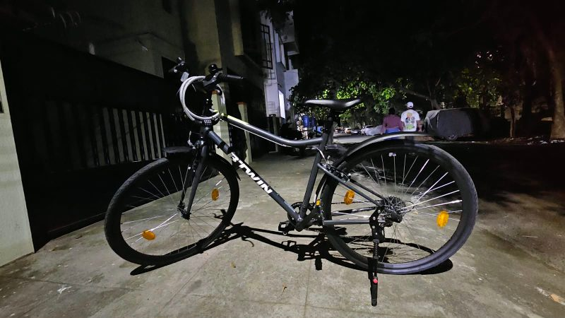

Discover
User research, structured problem definition, and the metrics that say what to build and why.
Hi, I'm Rinkle
Associate Product Manager at Corridor Platforms, a decision-intelligence fintech for banks. I own Tier-1 U.S. bank engagements end to end, backed by a data science foundation from IIT Madras and a bias for shipping.
I'm a product manager working where strategy, data and delivery overlap. At Corridor Platforms I own enterprise bank engagements end to end: scoping PRDs, running UAT, closing feedback loops, and shipping features people actually adopt.
My data science background means I'm as comfortable defining the metric and reading the numbers as I am aligning stakeholders and writing the product story. Lately that's pulled me into AI agents, designing MCP servers and agent tooling for credit-risk work.
User research, structured problem definition, and the metrics that say what to build and why.
PRDs, roadmaps and prioritisation frameworks that turn a pile of ideas into a sequence.
UAT, stakeholder alignment and iterative releases that make it all the way to production.
An MCP server and Claude Code plugin that let an AI agent read and write credit-risk policies on our platform, plus a domain-knowledge layer that keeps its reasoning inside the rules.
6 min read

Edtech · ConsumerA research-led feature that turns a learner's repeated grammar mistakes into one concept to learn, practise and revisit. Includes a clickable prototype.
8 min read
A model monitoring dashboard admins can reconfigure themselves, built for a Tier-1 U.S. bank now tracking 380+ models in production.
5 min read
Automatic alerts for model owners, with a variable-aware email editor that validates before it lets you save.
4 min read
A chat assistant that answers questions about models and data in place, connected over MCP, and knows when to say no.
5 min read
A faster path from a portfolio report to a presentable deck, with a rerun step that flags outdated slides.
4 min read
A RAG-powered copilot that drafts cited replies for support agents from a company's own docs. PRD, architecture and a clickable prototype.
8 min read
M.Tech thesis · Public sector
Modelled 271K complaints with the Tamil Nadu Cyber Crime Wing: an LSTM forecaster (WMAPE 14.68) and an XGBoost severity classifier projected to cut manual assessment by 90%.
In the next issueUser research · NPS
How weekly user insight sessions and tighter UAT lifted NPS from 6 to 8 and caught 20+ critical issues before release.
In the next issueBCG · Data strategy
A schema for 450+ reports and a prioritisation framework that sequenced 200+ executive reports into a Phase 1 rollout.
In the next issueHelloPM
IIT Madras · GPA 8.9/10
KTH Royal Institute of Technology · Stockholm
IIT Madras · GPA 8.9/10
Corridor Platforms · Bengaluru
Boston Consulting Group · Chennai
I'm a bit of a board-game addict. Give me Catan, Connect 4 or a quick round of Orbito and I'm usually the one refusing to pack up. When I'm not at the table I'm on a bike clearing my head, or planning the next trip.

Riverside 120 my ride